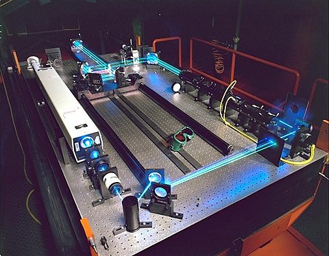

Что такое оптические компьютеры?

Оптические или фотонные вычислители — гипотетические вычислительные устройства, вычисления в которых производятся с помощью фотонов, излучаемыми лазерами или светодиодами.
Большинство современных исследований направлено на замену традиционных (электронных) компонентов компьютера на их оптические эквиваленты.
Предполагается, что результатом этих исследований станет новая цифровая компьютерная технология для обработки двоичных данных. Такой подход по замене элементной базы даёт возможность в краткосрочной перспективе разработать технологии для коммерческого применения, поскольку оптические компоненты могут быть использованы в классических компьютерах, сначала при создании гибридных электронно-фотонных систем, а затем и полностью фотонных.
Однако оптоэлектронные приборы теряют 30 % энергии при преобразовании электроэнергии в свет и обратно, что также замедляет скорость передачи информации в оптоэлектронных повторителях. В гипотетическом полностью оптическом компьютере не будет преобразования сигнала из оптического в электрический и обратного преобразования в оптический сигнал.
{kind=link}
Оптические компоненты для обработки информации
 Фундаментальным компонентом электронных компьютеров является управляемый электронный переключатель, которым чаще всего выступает транзистор. Для замены электронной логики оптической при одновременном сохранении существующей концептуальной логической схемотехники потребуется реализовать оптический транзистор.
Фундаментальным компонентом электронных компьютеров является управляемый электронный переключатель, которым чаще всего выступает транзистор. Для замены электронной логики оптической при одновременном сохранении существующей концептуальной логической схемотехники потребуется реализовать оптический транзистор.
Один из возможных вариантов — использование материалов с нелинейными оптическими эффектами, в частности, нелинейное поведение показателя преломления.
Уже найдены некоторые материалы у которых интенсивность входящего излучения влияет на интенсивность проходящего излучения, такое поведение образно сравнивают с семейством вольт-амперных характеристик полупроводникового транзистора. Подобные «оптические транзисторы» могли бы использоваться для создания оптических логических вентилей, из которых собирались бы более сложные логические схемы. Однако, многие нелинейные эффекты требуют очень большой интенсивности управляющих сигналов.
Источники